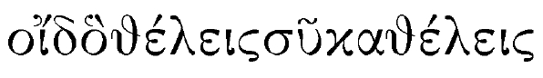
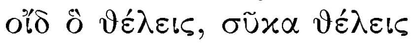
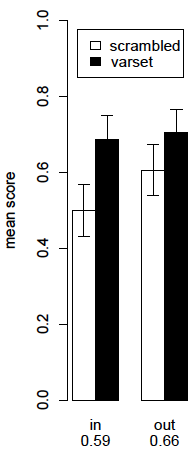

"Experience, from the very first, presents us with concreted objects, vaguely
continuous with the rest of the world which envelops them in space and time, and
potentially divisible into inward elements and parts. [...] The baby, assailed by
eye, ear, nose, skin and entrails at once, feels it all as one great
"When only a small percentage of all possible sound-sequences actually
occurs in utterances, one can identify the boundaries of words, and their
relative likelihoods, from their sentential environment.
It is an essential property of language that the combinations of words and utterances are not all equiprobable.
It follows that whatever else there is to be said about the form of language,
a fundamental task is to state the

Despite initial appearances, this sequence has some highly improbable properties. Can you tell what they are?
[And don't say "It's all Greek to me"]

Despite initial appearances, this sequence has some highly improbable properties.
Specifically, it contains a
The same computational problem arises in vision.
Can you see the two ptarmigan in this scene?
There are 14 phonemes in the utterance "they don't know where to go", whose spectrogram is shown here.
For example, a
constitutes evidence that the content of the slot (B__G) may serve as useful unit.
One of the many relevant kinds of statistics is the
It is highest when the two sounds follow one another within a
For example, consider the sequence prettybaby in the context of a corpus in which pretty and baby appear paired with other words, and not just with each other: {prettydoggie, prettybaby, nicedoggie, nicebaby, prettydoll}.
Now, the probability of
will be higher than the probability of
The groundbreaking study of Saffran, Aslin, and Newport (1996) presented
6-8 month old infants with 2-minute long snippets of synthesized
speech in which the transitional probabilities were controlled.
A habituation / head-turn procedure was used to quantify the ability of the subjects to segment speech into "words".
Average
The infants treated part-words as novel items and thus distinguished them from whole words.
Two stages in the processing of Alice in Wonderland by the
To learn
|
the marmot in the hole
the big marmot the big brown marmot the marmot saw Trotsky |

|
сталинкаменеваубил
сталинзиновьеваубил
сталинфрунзеубил
To find structure,
сталинкаменеваубил
сталинзиновьеваубил
сталинфрунзеубил
сталинвсехчьялояльностьбылаподмалейшимподозрением
имногихчьялояльностьбылабезупречнойубил
сталинвсехчьялояльностьбылаподмалейшимподозрением
имногихчьялояльностьбылабезупречнойубил
To find structure,
Then, feel free to substitute equivalent items [note the accusative case] in the proper context.
Language learning / use is an embodied, situated, incremental, dynamically
constrained, concurrent, multimodal social behavior.
[Michael H. Goldstein, Heidi R. Waterfall, Arnon Lotem, Joseph Y. Halpern, Jennifer A. Schwade, Luca Onnis, and Shimon Edelman (2010). General cognitive principles for learning structure in time and space, Trends in Cognitive Sciences 14:249-258.]
Runs of partially matching (= alignable) sentences occur naturally in
child-directed speech.
Naturalistic longitudinal studies (notably, by Heidi Waterfall) show that
such
[The six examples here are all from the Child Language Data Exchange System, CHILDES.]
Can the effectiveness of variation sets be demonstrated in a controlled
expriment?
Onnis, Waterfall, and Edelman (Learn Locally, Act Globally: Learning Language from Variation Set Cues, Cognition 109:423-430, 2008) had subjects listen to ~100 sentences generated by a small artificial grammar.
Half of the subjects heard these sentences arranged so that ~20% of them formed variation sets; the other half heard exactly the same sentences in a randomly scrambled order (no variation sets).
ko si zu pa gu klo zi da pe ra pra ti ko si fa ma pju da zu pa pra ti

Can the effectiveness of variation sets be demonstrated in a controlled
expriment?
Onnis, Waterfall, and Edelman (Learn Locally, Act Globally: Learning Language from Variation Set Cues, Cognition 109:423-430, 2008) had subjects listen to ~100 sentences generated by a small artificial grammar.
Half of the subjects heard these sentences arranged so that ~20% of them formed variation sets; the other half heard exactly the same sentences in a randomly scrambled order (no variation sets).
"Words" that appeared in variation sets are more reliably segmented.
Last modified: Thu Aug 6 2020 at 10:10:37 EDT